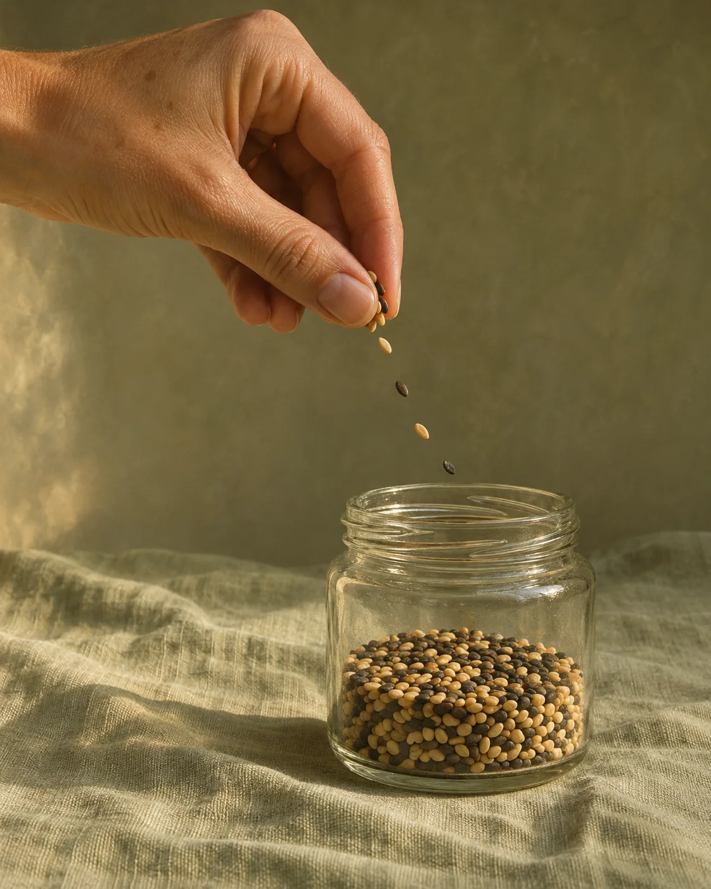

Élan Verde
Seed gathering
The space
before
the jar.
Open fingers. A small fall. The rim of a glass catches the last light.

The margins follow the fall from fingertips to glass. AI-generated concept photograph, composed for this portfolio edition.